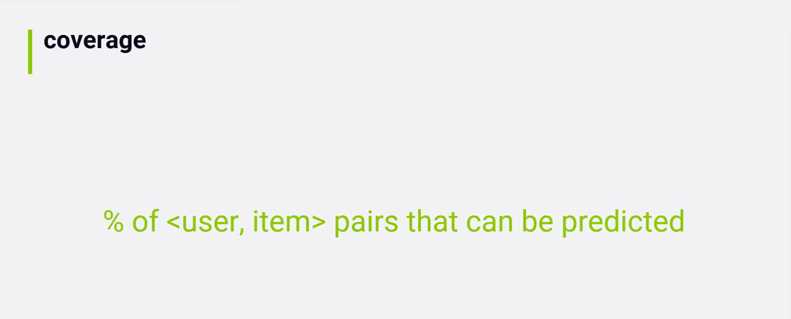
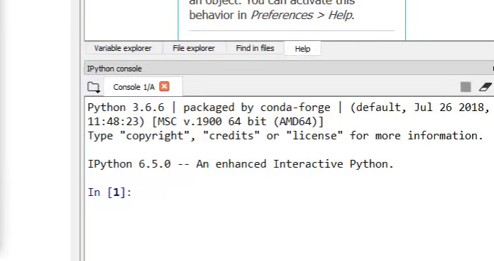
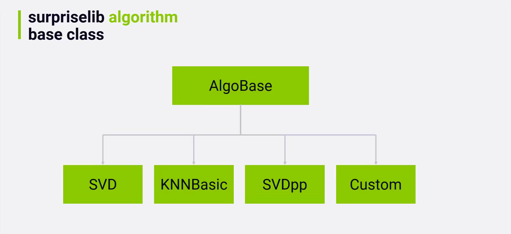
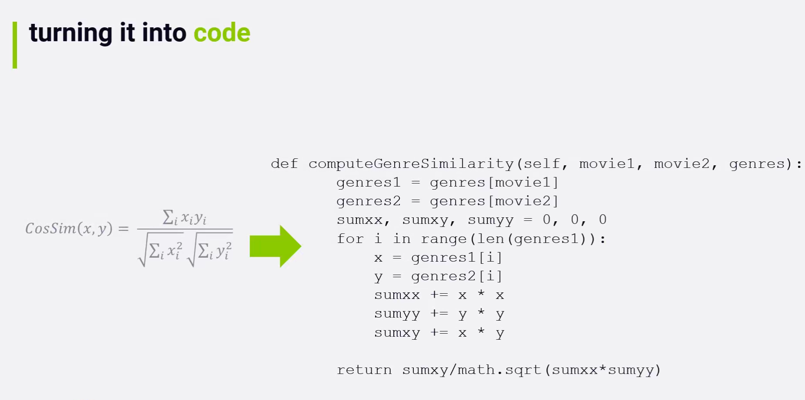
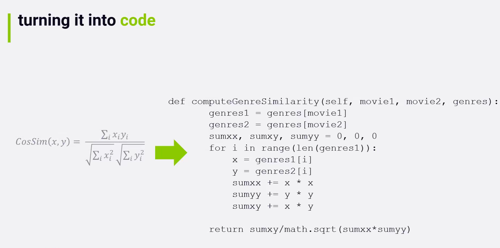
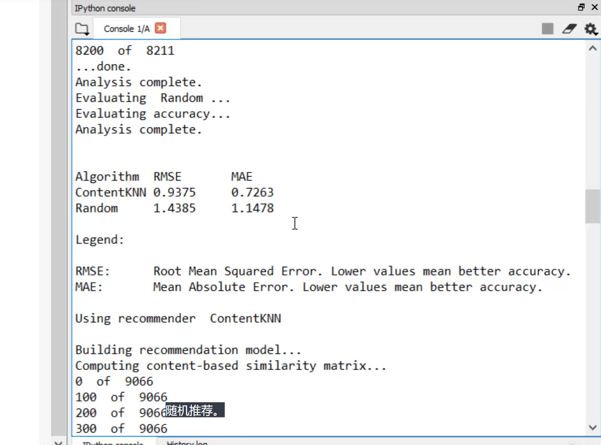
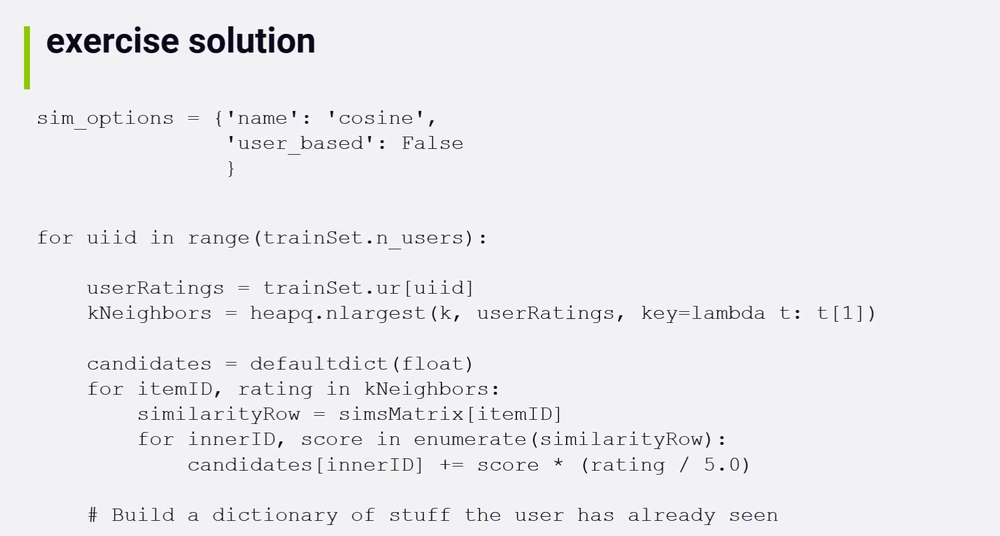
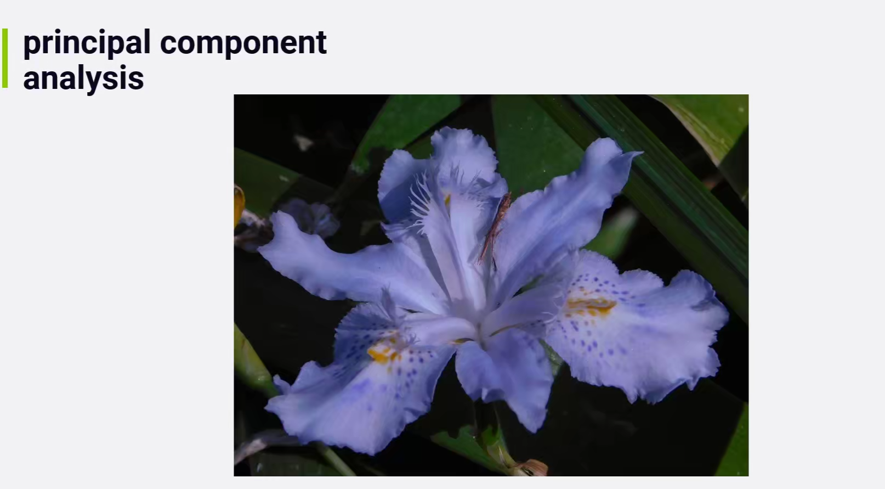
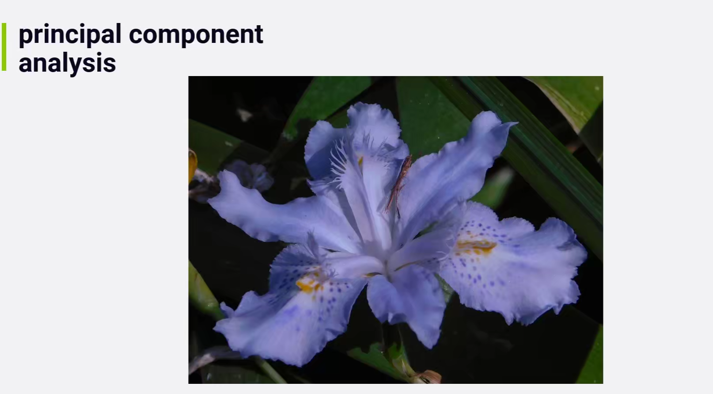

01 - Getting Started
004 [Activity] Install Anaconda, course materials, and create movie recommendations!
005 Course Roadmap
006 What Is a Recommender System

007 Types of Recommenders
008 Understanding You through Implicit and Explicit Ratings
009 Top-N Recommender Architecture
010 [Quiz] Review the basics of recommender systems

03 - Evaluating Recommender Systems
001 TrainTest and Cross Validation
002 Accuracy Metrics (RMSE, MAE)
003 Top-N Hit Rate - Many Ways

004 Coverage, Diversity, and Novelty

005 Churn, Responsiveness, and AB Tests
006 [Quiz] Review ways to measure your recommender
007 [Activity] Walkthrough of RecommenderMetrics.py

import itertools
# conda install -c conda-forge scikit-surprise
from surprise import accuracy
from collections import defaultdict
# 推荐指标类
class RecommenderMetrics:
def MAE(predictions):
return accuracy.mae(predictions, verbose=False)
def RMSE(predictions):
return accuracy.rmse(predictions, verbose=False)
def GetTopN(predictions, n=10, minimumRating=4.0):
topN = defaultdict(list)
for userID, movieID, actualRating, estimatedRating, _ in predictions:
# 如果系统评估的分数大于最低评分阈值, 就加入到topN
if (estimatedRating >= minimumRating):
topN[int(userID)].append((int(movieID), estimatedRating))
# topN: [userID: (movieID, esRating), ...]
for userID, ratings in topN.items():
# 根据电影评分排序
ratings.sort(key=lambda x: x[1], reverse=True)
topN[int(userID)] = ratings[:n]
return topN
# 留一
def HitRate(topNPredicted, leftOutPredictions):
hits = 0
total = 0
for leftOut in leftOutPredictions:
userID = leftOut[0]
leftOutMovieID = leftOut[1]
# 该leftout是否是topN里的
hit = False
for movieID, predictedRating in topNPredicted[int(userID)]:
if (int(leftOutMovieID) == int(movieID)):
hit = True
break
if (hit):
hits += 1
total += 1
# Compute overall precision
return hits / total
# 累积命中率
def CumulativeHitRate(topNPredicted, leftOutPredictions, ratingCutoff=0):
hits = 0
total = 0
# For each Left-out rating
for userID, leftOutMovieID, actualRating, estimatedRating, _ in leftOutPredictions:
# OnLy Look at ability to recommend things the users actually liked..
if (actualRating >= ratingCutoff):
# Is it in the predicted top 10 for this user?
hit = False
for movieID, predictedRating in topNPredicted[int(userID)]:
if (int(leftOutMovieID) == int(movieID)):
hit = True
break
if (hit):
hits += 1
total += 1
# Compute overall precision
return hits / total
def RatingHitRate(topNPredicted, leftOutPredictions):
hits = defaultdict(float)
total = defaultdict(float)
# For each Left-out rating
for userID, leftOutMovieID, actualRating, estimatedRating, _ in leftOutPredictions:
# Is it in the predicted top 10 for this user?
hit = False
for movieID, predictedRating in topNPredicted[int(userID)]:
if (int(leftOutMovieID) == int(movieID)):
hit = True
break
if (hit):
hits[actualRating] += 1
total[actualRating] += 1
# Compute overall precision
result = {}
for rating in sorted(hits.keys()):
# print(rating, hits[rating] / total[rating])
result[rating] = hits[rating] / total[rating]
return result
def AverageReciprocalHitRank(topNPredicted, leftOutPredictions):
summation = 0
total = 0
# For each left-out rating
for userID, leftOutMovieID, actualRating, estimatedRating, _ in leftOutPredictions:
# Is it in the predicted top N for this user?
hitRank = 0
rank = 0
for movieID, predictedRating in topNPredicted[int(userID)]:
rank = rank + 1
# 如果推荐的命中了, 就 +1 hitRank
if (int(leftOutMovieID) == movieID):
hitRank = rank
break
if (hitRank > 0):
summation += 1.0 / hitRank
total += 1
return summation / total
# 用户覆盖率
# What percentage of users have at least one "good" recommendation
def UserCoverage(topNPredicted, numUsers, ratingThreshold=0):
hits = 0
for userID in topNPredicted.keys():
hit = False
for movieID, predictedRating in topNPredicted[userID]:
if (predictedRating >= ratingThreshold):
hit = True
break
if (hit):
hits += 1
return hits / numUsers
# 多样性
def Diversity(topNPredicted, simsAlgo):
n = 0
total = 0
simsMatrix = simsAlgo.compute_similarities()
for userID in topNPredicted.keys():
# 创建一个迭代器，返回iterable中所有长度为r的子序列，
# 返回的子序列中的项按输入iterable中的顺序排序 (不带重复).
# r 指定生成排列的元素的长度，如果不指定，则默认为可迭代对象的元素长度。
pairs = itertools.combinations(topNPredicted[userID], 2)
for pair in pairs:
movie1 = pair[0][0]
movie2 = pair[1][0]
innerID1 = simsAlgo.trainset.to_inner_iid(str(movie1))
innerID2 = simsAlgo.trainset.to_inner_iid(str(movie2))
# 求相似度
similarity = simsMatrix[innerID1][innerID2]
total += similarity
n += 1
S = total / n
return (1 - S)
# 新颖性
def Novelty(topNPredicted, rankings):
n = 0
total = 0
for userID in topNPredicted.keys():
for rating in topNPredicted[userID]:
movieID = rating[0]
rank = rankings[movieID]
total += rank
n += 1
return total / n
008 [Activity] Walkthrough of TestMetrics.py
# MovieLens.py
import os
import csv
import sys
import re
from surprise import Dataset
from surprise import Reader
from collections import defaultdict
import numpy as np
class MovieLens:
movieID_to_name = {}
name_to_movieID = {}
ratingsPath = '../ml-latest-small/ratings.csv'
moviesPath = '../ml-latest-small/movies.csv'
def loadMovieLensLatestSmall(self):
'''
加载电影数据, 编码为 电影名和电影ID 的对应字典
:return:
'''
# Look for files relative to the directory we are running from
os.chdir(os.path.dirname(sys.argv[0]))
ratingsDataset = 0
self.movieID_to_name = {}
self.name_to_movieID = {}
reader = Reader(line_format='user item rating timestamp', sep=',', skip_lines=1)
ratingsDataset = Dataset.load_from_file(self.ratingsPath, reader=reader)
with open(self.moviesPath, newline='', encoding='ISO-8859-1') as csvfile:
movieReader = csv.reader(csvfile)
next(movieReader) # Skip header Line
for row in movieReader:
movieID = int(row[0])
movieName = row[1]
self.movieID_to_name[movieID] = movieName
self.name_to_movieID[movieName] = movieID
return ratingsDataset
def getUserRatings(self, user):
userRatings = []
hitUser = False
with open(self.ratingsPath, newline='') as csvfile:
ratingReader = csv.reader(csvfile)
next(ratingReader)
for row in ratingReader:
userID = int(row[0])
if (user == userID):
movieID = int(row[1])
rating = float(row[2])
userRatings.append((movieID, rating))
hitUser = True
if (hitUser and (user != userID)):
break
return userRatings
def getPopularityRanks(self):
ratings = defaultdict(int)
rankings = defaultdict(int)
with open(self.ratingsPath, newline='') as csvfile:
ratingReader = csv.reader(csvfile)
next(ratingReader)
for row in ratingReader:
movieID = int(row[1])
ratings[movieID] += 1
rank = 1
# 根据 rating[1](movie出现次数) 排序, 然后遍历, 将出现次数改为 rank(排名)
for movieID, ratingCount in sorted(ratings.items(), key=lambda x: x[1], reverse=True):
rankings[movieID] = rank # 设置排名
rank += 1 # 下一个的排名变为当前rank+1
return rankings
def getGenres(self):
'''
标签
:return:
'''
genres = defaultdict(list)
genreIDs = {} # 标签toID的字典
maxGenreID = 0 # 当前最大的ID号
with open(self.moviesPath, newline='', encoding='ISO-8859-1') as csvfile:
movieReader = csv.reader(csvfile)
next(movieReader) # skip header Line
for row in movieReader:
movieID = int(row[0])
genreList = row[2].split('|')
genreIDList = []
# 将文本形式的标签list, 转为ID数字形式
for genre in genreList:
# 如果已经编码在ID里
if genre in genreIDs:
# 使用已经编码的ID
genreID = genreIDs[genre]
else:
# 给标签编码
genreID = maxGenreID
genreIDs[genre] = genreID
maxGenreID += 1
genreIDList.append(genreID)
genres[movieID] = genreIDList
# Convert integer-encoded genre lists to bitfields that we can treat as vectors
for (movieID, genreIDList) in genres.items():
bitfield = [0] * maxGenreID
for genreID in genreIDList:
bitfield[genreID] = 1
genres[movieID] = bitfield
return genres
def getYears(self):
'''
编码 电影ID到上映年份 的字典
:return:
'''
p = re.compile(r"(?:\((\d{4})\))?\s*$")
years = defaultdict(int)
with open(self.moviesPath, newline='', encoding='ISO-8859-1') as csvfile:
movieReader = csv.reader(csvfile)
next(movieReader)
for row in movieReader:
movieID = int(row[0])
title = row[1] # like: Toy Story (1995)
m = p.search(title) # 使用正则
year = m.group(1)
if year:
years[movieID] = int(year)
return years
def getMiseEnScene(self):
'''
读取日志
:return:
'''
mes = defaultdict(list)
with open("LLVisualFeatures13K_Log.csv", newline='') as csvfile:
mesReader = csv.reader(csvfile)
next(mesReader)
for row in mesReader:
movieID = int(row[0])
avgShotLength = float(row[1])
meanColorVariance = float(row[2])
stddevColorVariance = float(row[3])
meanMotion = float(row[4])
stddevMotion = float(row[5])
meanLightingKey = float(row[6])
numShots = float(row[7])
mes[movieID] = [avgShotLength, meanColorVariance, stddevColorVariance,
meanMotion, stddevMotion,
meanLightingKey, numShots]
return mes
def getMovieName(self, movieID):
if movieID in self.movieID_to_name:
return self.movieID_to_name[movieID]
else:
return ""
def getMovieID(self, movieName):
if movieName in self.name_to_movieID:
return self.name_to_movieID[movieName]
else:
return 0
# TestMetrics.py
from MovieLens import MovieLens
from surprise import SVD
from surprise import KNNBaseline
from surprise.model_selection import train_test_split, LeaveOneOut
from RecommenderMetrics import RecommenderMetrics
ml = MovieLens()
print("Loading movie ratings...")
data = ml.loadMovieLensLatestSmall() # return surprise.Dataset
print("\nComputing movie popularity ranks so we can measure novelty later...")
rankings = ml.getPopularityRanks()
print("\nComputing item similarities so we can measure diversity later...")
fullTrainSet = data.build_full_trainset()
sim_options = {'name': 'pearson_baseline', 'user_based': False}
simsAlgo = KNNBaseline(sim_options=sim_options) # KNN 用于计算相似度
simsAlgo.fit(fullTrainSet)
print("\nBuilding recommendation model...")
trainSet, testSet = train_test_split(data, test_size=.25, random_state=1)
algo = SVD(random_state=10) # 将输入数据矩阵进行降维, 提取特征, 提高计算性能
algo.fit(trainSet)
print("\nComputing recommendations...")
predictions = algo.test(testSet)
print("\nEvaluating accuracy of model...")
print("RMSE:", RecommenderMetrics.RMSE(predictions))
print("MAE:", RecommenderMetrics.MAE(predictions))
print("\nEvaluating top-10 recommendations...")
# Set aside one rating per user for testing
LOOCV = LeaveOneOut(n_splits=1, random_state=1) # 交叉验证迭代器
for trainSet, testSet in LOOCV.split(data):
print("Computing recommendations with leave-one-out...")
# Train model without Left-out ratings
algo.fit(trainSet)
# Predicts ratings for Left-out ratings only
print("Predict ratings for left-out set...")
leftOutPredictions = algo.test(testSet)
# Build predictions for all ratings not in the training set
print("Predict all missing ratings...")
# Return a list of ratings that can be used as a testset in the
# :meth:`test() <surprise.prediction_algorithms.algo_base.AlgoBase.test>`
# method.
bigTestSet = trainSet.build_anti_testset()
allPredictions = algo.test(bigTestSet)
# Compute top 10 recs for each user
print("Compute top 10 recs per user...")
topNPredicted = RecommenderMetrics.GetTopN(allPredictions, n=10)
# See how often we recommended a movie the user actually rated
print("\nHit Rate:", RecommenderMetrics.HitRate(topNPredicted, leftOutPredictions))
# Break down hit rate by rating value
print("\nrHR (Hit Rate by Rating value):",
RecommenderMetrics.RatingHitRate(topNPredicted, leftOutPredictions))
# See how often we recommended a movie the user actually Liked
print("\ncHR (Cumulative Hit Rate,rating >= 4):",
RecommenderMetrics.CumulativeHitRate(topNPredicted, leftOutPredictions, 4.0))
# Compute ARHR
print("\nARHR (Average Reciprocal Hit Rank):",
RecommenderMetrics.AverageReciprocalHitRank(topNPredicted, leftOutPredictions))
print("\nComputing complete recommendations,no hold outs...")
algo.fit(fullTrainSet)
bigTestSet = fullTrainSet.build_anti_testset()
allPredictions = algo.test(bigTestSet)
topNPredicted = RecommenderMetrics.GetTopN(allPredictions, n=10)
# Print user coverage with a minimum predicted rating of 4.0:
print("\nUser coverage:",
RecommenderMetrics.UserCoverage(topNPredicted, fullTrainSet.n_users, ratingThreshold=4.0))
# Measure diversity of recommendations:
print("\nDiversity:", RecommenderMetrics.Diversity(topNPredicted, simsAlgo))
# Measure novelty (average popularity rank of recommendations):
print("\nNovelty (average popularity rank):", RecommenderMetrics.Novelty(topNPredicted, rankings))
009 [Activity] Measure the Performance of SVD Recommendations
04 - A Recommender Engine Framework
001 Our Recommender Engine Architecture

002 [Activity] Recommender Engine Walkthrough, Part 1
# Evaluator.py
from EvaluationData import EvaluationData
from EvaluatedAlgorithm import EvaluatedAlgorithm
class Evaluator:
algorithms = []
def __init__(self, dataset, rankings):
ed = EvaluationData(dataset, rankings)
self.dataset = ed
def AddAlgorithm(self, algorithm, name):
alg = EvaluatedAlgorithm(algorithm, name)
self.algorithms.append(alg)
def Evaluate(self, doTopN):
results = {}
for algorithm in self.algorithms:
print("Evaluating ", algorithm.GetName(), "...")
results[algorithm.GetName()] = algorithm.Evaluate(self.dataset, doTopN)
# Print results
print("\n")
if (doTopN):
print("{:<10} {:<10} {:<10} {:<10} {:<10} {:<10} {:<10} {:<10} {:<10}".format(
"Algorithm", "RMSE", "MAE", "HR", "CHR", "ARHR", "Coverage", "Diversity", "Novelty"))
for (name, metrics) in results.items():
print("{:<10} {:<10.4f} {:<10.4f} {:<10.4f} {:<10.4f} {:<10.4f} {:<10.4f} {:<10.4f} {:<10.4f}".format(
name, metrics["RMSE"], metrics["MAE"], metrics["HR"], metrics["CHR"], metrics["ARHR"],
metrics["Coverage"], metrics["Diversity"], metrics["Novelty"]))
else:
print("{:<10} {:<10} {:<10}".format("Algorithm", "RMSE", "MAE"))
for (name, metrics) in results.items():
print("{:<10} {:<10.4f} {:<10.4f}".format(name, metrics["RMSE"], metrics["MAE"]))
print("\nLegend:\n")
print("RMSE: Root Mean Squared Error.Lower values mean better accuracy.")
print("MAE: Mean Absolute Error.Lower values mean better accuracy.")
if (doTopN):
print("HR: Hit Rate;how often we are able to recommend a left-out rating.Higher is better.")
print(
"cHR: Cumulative Hit Rate;hit rate,confined to ratings above a certain threshold.Higher is better.")
print(
"ARHR: Average Reciprocal Hit Rank-Hit rate that takes the ranking into account.Higher is better.")
print("Coverage:Ratio of users for whom recommendations above a certain threshold exist.Higher is better.")
print(
"Diversity:1-S,where s is the average similarity score between every possible pair of recommendations")
print(" for a given user.Higher means more diverse.")
print("Novelty: Average popularity rank of recommended items.Higher means more novel.")
def SampleTopNRecs(self, ml, testSubject=85, k=10):
for algo in self.algorithms:
print("\nUsing recommender ", algo.GetName())
print("\nBuilding recommendation model...")
trainSet = self.dataset.GetFullTrainSet()
algo.GetAlgorithm().fit(trainSet)
print("Computing recommendations...")
# 用户尚未评分的电影集 AntiTestSet
testSet = self.dataset.GetAntiTestSetForUser(testSubject)
# 对未看过的电影进行评分预测
predictions = algo.GetAlgorithm().test(testSet)
recommendations = []
print("\nWe recommend:")
for userID, movieID, actualRating, estimatedRating, _ in predictions:
intMovieID = int(movieID)
recommendations.append((intMovieID, estimatedRating))
recommendations.sort(key=lambda x: x[1], reverse=True)
for ratings in recommendations[:10]:
print(ml.getMovieName(ratings[0]), ratings[1])
# RecsBakeOff.py
# -*- coding: utf-8 -*-
from MovieLens import MovieLens
from surprise import SVD
from surprise import NormalPredictor
from Evaluator import Evaluator
import random
import numpy as np
def LoadMovieLensData():
ml = MovieLens()
print("Loading movie ratings...")
data = ml.loadMovieLensLatestSmall()
print("\nComputing movie popularity ranks so we can measure novelty later...")
rankings = ml.getPopularityRanks()
return (data, rankings)
np.random.seed(0)
random.seed(0)
# Load up common data set for the recommender algorithms
(evaluationData, rankings) = LoadMovieLensData()
# Construct an EvaLuator to,you know,evaluate them
evaluator = Evaluator(evaluationData, rankings)
# Throw in an SVD recommender
SVDAlgorithm = SVD(random_state=10)
evaluator.AddAlgorithm(SVDAlgorithm, "SVD")
# Just make random recommendations
Random = NormalPredictor()
evaluator.AddAlgorithm(Random, "Random")
# Fight!
evaluator.Evaluate(True)
003 [Activity] Recommender Engine Walkthrough, Part 2
# EvaluatedAlgorithm.py
from RecommenderMetrics import RecommenderMetrics
from EvaluationData import EvaluationData
class EvaluatedAlgorithm:
def __init__(self, algorithm, name):
self.algorithm = algorithm
self.name = name
def Evaluate(self, evaluationData, doTopN, n=10, verbose=True):
metrics = {}
# Compute accuracy
if (verbose):
print("Evaluating accuracy...")
self.algorithm.fit(evaluationData.GetTrainSet())
predictions = self.algorithm.test(evaluationData.GetTestSet())
metrics["RMSE"] = RecommenderMetrics.RMSE(predictions)
metrics["MAE"] = RecommenderMetrics.MAE(predictions)
if (doTopN):
# Evaluate top-10 with Leave One Out testing
if (verbose):
print("Evaluating top-N with leave-one-out...")
self.algorithm.fit(evaluationData.GetLOOCVTrainSet())
leftOutPredictions = self.algorithm.test(evaluationData.GetLOOCVTestSet())
# Build predictions for all ratings not in the training set
allPredictions = self.algorithm.test(evaluationData.GetLOOCVAntiTestSet())
# Compute top 10 recs for each user
topNPredicted = RecommenderMetrics.GetTopN(allPredictions, n)
if (verbose):
print("Computing hit-rate and rank metrics...")
# See how often we recommended a movie the user actually rated
metrics["HR"] = RecommenderMetrics.HitRate(topNPredicted, leftOutPredictions)
# See how often we recommended a movie the user actually Liked
metrics["CHR"] = RecommenderMetrics.CumulativeHitRate(topNPredicted, leftOutPredictions)
# Compute ARHR
metrics["ARHR"] = RecommenderMetrics.AverageReciprocalHitRank(topNPredicted, leftOutPredictions)
# Evaluate properties of recommendations on full training set
if (verbose):
print("Computing recommendations with full data set...")
self.algorithm.fit(evaluationData.GetFullTrainSet())
allPredictions = self.algorithm.test(evaluationData.GetFullAntiTestSet())
topNPredicted = RecommenderMetrics.GetTopN(allPredictions, n)
if (verbose):
print("Analyzing coverage,diversity,and novelty...")
# Print user coverage with a minimum predicted rating of 4.0:
metrics["Coverage"] = RecommenderMetrics.UserCoverage(topNPredicted,
evaluationData.GetFullTrainSet().n_users,
ratingThreshold=4.0)
# Measure diversity of recommendations:
metrics["Diversity"] = RecommenderMetrics.Diversity(topNPredicted, evaluationData.GetSimilarities())
# Measure novelty (average popularity rank of recommendations):
metrics["Novelty"] = RecommenderMetrics.Novelty(topNPredicted,
evaluationData.GetPopularityRankings())
if (verbose):
print("Analysis complete.")
return metrics
def GetName(self):
return self.name
def GetAlgorithm(self):
return self.algorithm
# EvaluationData.py
from surprise.model_selection import train_test_split
from surprise.model_selection import LeaveOneOut
from surprise import KNNBaseline
class EvaluationData:
def __init__(self, data, popularityRankings):
self.rankings = popularityRankings
# Build a full training set for evaluating overall properties
self.fullTrainSet = data.build_full_trainset()
self.fullAntiTestSet = self.fullTrainSet.build_anti_testset()
# Build a 75/25 train/test split for measuring accuracy
self.trainSet, self.testSet = train_test_split(data, test_size=.25, random_state=1)
# Build a "Leave one out"train/test split for evaluating top-N recommenders
# And build an anti-test-set for building predictions
LOOCV = LeaveOneOut(n_splits=1, random_state=1)
for train, test in LOOCV.split(data):
self.LOOCVTrain = train
self.LOOCVTest = test
self.LOOCVAntiTestSet = self.LOOCVTrain.build_anti_testset()
# Compute similarty matrix between items so we can measure diversity
sim_options = {'name': 'cosine', 'user_based': False}
# KNN 计算相似度矩阵
self.simsAlgo = KNNBaseline(sim_options=sim_options)
self.simsAlgo.fit(self.fullTrainSet)
def GetFullTrainSet(self):
return self.fullTrainSet
def GetFullAntiTestset(self):
return self.fullAntiTestSet
def GetAntiTestSetForUser(self, testSubject):
trainset = self.fullTrainSet
fill = trainset.global_mean
anti_testset = []
u = trainset.to_inner_uid(str(testSubject))
user_items = set([j for (j, _) in trainset.ur[u]])
anti_testset += [(trainset.to_raw_uid(u), trainset.to_raw_iid(i), fill) for
i in trainset.all_items() if
i not in user_items]
return anti_testset
def GetTrainSet(self):
return self.trainSet
def GetTestSet(self):
return self.testSet
def GetLOOCVTrainSet(self):
return self.LOOCVTrain
def GetLOOCVTestSet(self):
return self.LOOCVTest
def GetLOOCVAntiTestSet(self):
return self.LOOCVAntiTestSet
def GetFullAntiTestSet(self):
return self.fullAntiTestSet
def GetSimilarities(self):
return self.
def GetPopularityRankings(self):
return self.rankings
004 [Activity] Review the Results of our Algorithm Evaluation
05 - Content-Based Filtering
001 Content-Based Recommendations, and the Cosine Similarity Metric
 

002 K-Nearest-Neighbors and Content Recs
003 [Activity] Producing and Evaluating Content-Based Movie Recommendations

# ContentKNNAlgorithm.py
from surprise import AlgoBase
from surprise import PredictionImpossible
from MovieLens import MovieLens
import math
import numpy as np
import heapq
class ContentKNNAlgorithm(AlgoBase):
def __init__(self, k=40, sim_options={}):
AlgoBase.__init__(self)
self.k = k
def fit(self, trainset):
AlgoBase.fit(self, trainset)
# Compute item similarity matrix based on content attributes
# Load up genre vectors for every movie
ml = MovieLens()
genres = ml.getGenres()
years = ml.getYears()
mes = ml.getMiseEnScene()
print("Computing content-based similarity matrix...")
# Compute genre distance for every movie combination as a 2x2 matrix
self.similarities = np.zeros((self.trainset.n_items, self.trainset.n_items))
for thisRating in range(self.trainset.n_items):
if (thisRating % 100 == 0):
print(thisRating, " of ", self.trainset.n_items)
for otherRating in range(thisRating + 1, self.trainset.n_items):
thisMovieID = int(self.trainset.to_raw_iid(thisRating))
otherMovieID = int(self.trainset.to_raw_iid(otherRating))
genreSimilarity = self.computeGenreSimilarity(thisMovieID, otherMovieID, genres)
yearSimilarity = self.computeYearSimilarity(thisMovieID, otherMovieID, years)
# mesSimilarity self.computeMiseEnScenesimilarity(thisMovieID,otherMovieID,mes)
self.similarities[thisRating, otherRating] = genreSimilarity * yearSimilarity
self.similarities[otherRating, thisRating] = self.similarities[thisRating, otherRating]
print("...done.")
return self
# 标签相似度
def computeGenreSimilarity(self, moviel, movie2, genres):
genres1 = genres[moviel]
genres2 = genres[movie2]
sumxx, sumxy, sumyy = 0, 0, 0
for i in range(len(genres1)):
x = genres1[i]
y = genres2[i]
sumxx += x * x
sumyy += y * y
sumxy += x * y
return sumxy / math.sqrt(sumxx * sumyy)
# 上映年份相似度
def computeYearSimilarity(self, movie1, movie2, years):
diff = abs(years[movie1] - years[movie2])
sim = math.exp(-diff / 10.0)
return sim
def computeMiseEnSceneSimilarity(self, movie1, movie2, mes):
mes1 = mes[movie1]
mes2 = mes[movie2]
if (mes1 and mes2):
shotLengthDiff = math.fabs(mes1[0] - mes2[0])
colorVarianceDiff = math.fabs(mes1[1] - mes2[1])
motionDiff = math.fabs(mes1[3] - mes2[3])
lightingDiff = math.fabs(mes1[5] - mes2[5])
numShotsDiff = math.fabs(mes1[6] - mes2[6])
return shotLengthDiff * colorVarianceDiff * motionDiff * lightingDiff * numShotsDiff
else:
return 0
def estimate(self, u, i):
if not (self.trainset.knows_user(u) and self.trainset.knows_item(i)):
raise PredictionImpossible('User and/or item is unkown.')
# Build up similarity scores between this item and everything the user rated
neighbors = []
for rating in self.trainset.ur[u]:
genreSimilarity = self.similarities[i, rating[0]]
neighbors.append((genreSimilarity, rating[1]))
# Extract the top-K most-sumilar ratings
# nlargest: Find the n largest elements in a dataset.
# Equivalent to: sorted(iterable, key=key, reverse=True)[:n]
k_neighbors = heapq.nlargest(self.k, neighbors, key=lambda t: t[0])
# Compute average sim score of K neighbors weighted by user ratings
simTotal = weightedSum = 0
for (simScore, rating) in k_neighbors:
if (simScore > 0):
simTotal += simScore
weightedSum += simScore * rating
if (simTotal == 0):
raise PredictionImpossible('No neighbors')
predictedRating = weightedSum / simTotal
return predictedRating
# ContentRecs.py
from MovieLens import MovieLens
from ContentKNNAlgorithm import ContentKNNAlgorithm
from Evaluator import Evaluator
from surprise import NormalPredictor
import random
import numpy as np
def LoadMovieLensData():
ml = MovieLens()
print("Loading movie ratings...")
data = ml.loadMovieLensLatestSmall()
print("\nComputing movie popularity ranks so we can measure novelty later...")
rankings = ml.getPopularityRanks()
return (ml, data, rankings)
np.random.seed(0)
random.seed(0)
# Load up common data set for the recommender algorithms
(ml, evaluationData, rankings) = LoadMovieLensData()
# Construct an Evaluator to,you know,evaluate them
evaluator = Evaluator(evaluationData, rankings)
contentKNN = ContentKNNAlgorithm()
evaluator.AddAlgorithm(contentKNN, "ContentKNN")
# Just make random recommendations
Random = NormalPredictor()
evaluator.AddAlgorithm(Random, "Random")
evaluator.Evaluate(False)
evaluator.SampleTopNRecs(ml)
004 A Note on Using Implicit Ratings

005 [Activity] Bleeding Edge Alert! Mise en Scene Recommendations
006 [Exercise] Dive Deeper into Content-Based Recommendations
06 - Neighborhood-Based Collaborative Filtering
001 Measuring Similarity, and Sparsity
协同过滤, 基于他人的评价来推荐
002 Similarity Metrics
003 User-based Collaborative Filtering
004 [Activity] User-based Collaborative Filtering, Hands-On
# -*- coding: utf-8 -*-
"""
Created on Wed May 9 10:10:04 2018
@author: Frank
"""
# SimpleUserCF.py
from MovieLens import MovieLens
from surprise import KNNBasic
import heapq
from collections import defaultdict
from operator import itemgetter
testSubject = '85'
k = 10
# Load our data set and compute the user similarity matrix
ml = MovieLens()
data = ml.loadMovieLensLatestSmall()
trainSet = data.build_full_trainset()
sim_options = {'name': 'cosine',
'user_based': True
}
model = KNNBasic(sim_options=sim_options)
model.fit(trainSet)
simsMatrix = model.compute_similarities()
# Get top N similar users to our test subject
# (Alternate approach would be to select users up to some similarity threshold - try it!)
testUserInnerID = trainSet.to_inner_uid(testSubject)
similarityRow = simsMatrix[testUserInnerID] # 用户85的相似度矩阵
similarUsers = [] # 记录相似的用户
for innerID, score in enumerate(similarityRow):
if (innerID != testUserInnerID):
similarUsers.append((innerID, score))
# 找到前k个最相似的user
kNeighbors = heapq.nlargest(k, similarUsers, key=lambda t: t[1])
# Get the stuff they rated, and add up ratings for each item, weighted by user similarity
candidates = defaultdict(float)
for similarUser in kNeighbors:
innerID = similarUser[0] # simi user id
userSimilarityScore = similarUser[1] # simi user score 和85号的相似分值
theirRatings = trainSet.ur[innerID] # simi user rating
for rating in theirRatings:
# movie: simi user score * rating/5
candidates[rating[0]] += (rating[1] / 5.0) * userSimilarityScore
# Build a dictionary of stuff the user has already seen
watched = {}
for itemID, rating in trainSet.ur[testUserInnerID]:
watched[itemID] = 1 # 记录85号已经看过的movie, 没看过的为 movieID: 0
# Get top-rated items from similar users:
pos = 0
# 根据 candidates候选字典的 [1](score) 排序, 然后遍历
for itemID, ratingSum in sorted(candidates.items(), key=itemgetter(1), reverse=True):
# 85号没看过
if not itemID in watched:
movieID = trainSet.to_raw_iid(itemID)
print(ml.getMovieName(int(movieID)), ratingSum)
pos += 1
if (pos > 10):
break
005 Item-based Collaborative Filtering
基于物品的协同过滤(新用户也能很快被推荐适合的, 如果是基于用户, 则需要新用户产生消费或评价数据才能更好地推荐)
006 [Activity] Item-based Collaborative Filtering, Hands-On
# -*- coding: utf-8 -*-
"""
Created on Wed May 9 10:10:04 2018
@author: Frank
"""
# SimpleItemCF.py 基于物品
from MovieLens import MovieLens
from surprise import KNNBasic
import heapq
from collections import defaultdict
from operator import itemgetter
testSubject = '85'
k = 10
ml = MovieLens()
data = ml.loadMovieLensLatestSmall()
trainSet = data.build_full_trainset()
sim_options = {'name': 'cosine',
'user_based': False
}
model = KNNBasic(sim_options=sim_options)
model.fit(trainSet)
simsMatrix = model.compute_similarities()
testUserInnerID = trainSet.to_inner_uid(testSubject)
# Get the top K items we rated
testUserRatings = trainSet.ur[testUserInnerID] # 得到85号的评分数据
# 找到k个评分最高的
kNeighbors = heapq.nlargest(k, testUserRatings, key=lambda t: t[1])
# Get similar items to stuff we liked (weighted by rating)
candidates = defaultdict(float)
for itemID, rating in kNeighbors:
similarityRow = simsMatrix[itemID] # 找到和被评分物品相似的
for innerID, score in enumerate(similarityRow):
# 记录新物品的评分
candidates[innerID] += score * (rating / 5.0)
# Build a dictionary of stuff the user has already seen
watched = {} # 记录85号看过的
for itemID, rating in trainSet.ur[testUserInnerID]:
watched[itemID] = 1
# Get top-rated items from similar users:
pos = 0
for itemID, ratingSum in sorted(candidates.items(), key=itemgetter(1), reverse=True):
if not itemID in watched:
movieID = trainSet.to_raw_iid(itemID)
print(ml.getMovieName(int(movieID)), ratingSum)
pos += 1
if (pos > 10):
break
007 [Exercise] Tuning Collaborative Filtering Algorithms
008 [Activity] Evaluating Collaborative Filtering Systems Offline
# -*- coding: utf-8 -*-
"""
Created on Wed May 9 10:10:04 2018
@author: Frank
"""
# EvaluateUserCF.py
from MovieLens import MovieLens
from surprise import KNNBasic
import heapq
from collections import defaultdict
from operator import itemgetter
from surprise.model_selection import LeaveOneOut
from RecommenderMetrics import RecommenderMetrics
from EvaluationData import EvaluationData
def LoadMovieLensData():
ml = MovieLens()
print("Loading movie ratings...")
data = ml.loadMovieLensLatestSmall()
print("\nComputing movie popularity ranks so we can measure novelty later...")
rankings = ml.getPopularityRanks()
return (ml, data, rankings)
ml, data, rankings = LoadMovieLensData()
evalData = EvaluationData(data, rankings)
# Train on leave-One-Out train set
trainSet = evalData.GetLOOCVTrainSet()
sim_options = {'name': 'cosine',
'user_based': True}
model = KNNBasic(sim_options=sim_options)
model.fit(trainSet)
simsMatrix = model.compute_similarities()
leftOutTestSet = evalData.GetLOOCVTestSet()
# Build up dict to lists of (int(movieID), predictedrating) pairs
topN = defaultdict(list)
k = 10
for uiid in range(trainSet.n_users):
# Get top N similar users to this one
similarityRow = simsMatrix[uiid]
similarUsers = []
for innerID, score in enumerate(similarityRow):
if (innerID != uiid):
similarUsers.append((innerID, score))
kNeighbors = heapq.nlargest(k, similarUsers, key=lambda t: t[1])
# Get the stuff they rated, and add up ratings for each item, weighted by user similarity
candidates = defaultdict(float)
for similarUser in kNeighbors:
innerID = similarUser[0]
userSimilarityScore = similarUser[1]
theirRatings = trainSet.ur[innerID]
for rating in theirRatings:
candidates[rating[0]] += (rating[1] / 5.0) * userSimilarityScore
# Build a dictionary of stuff the user has already seen
watched = {}
for itemID, rating in trainSet.ur[uiid]:
watched[itemID] = 1
# Get top-rated items from similar users:
pos = 0
for itemID, ratingSum in sorted(candidates.items(), key=itemgetter(1), reverse=True):
if not itemID in watched:
movieID = trainSet.to_raw_iid(itemID)
topN[int(trainSet.to_raw_uid(uiid))].append((int(movieID), 0.0))
pos += 1
if (pos > 40):
break
# Measure
print("HR", RecommenderMetrics.HitRate(topN, leftOutTestSet))
009 [Exercise] Measure the Hit Rate of Item-Based Collaborative Filtering

010 KNN Recommenders

011 [Activity] Running User and Item-Based KNN on MovieLens
# -*- coding: utf-8 -*-
"""
Created on Thu May 3 11:11:13 2018
@author: Frank
"""
# KNNBakeOff.py
from MovieLens import MovieLens
from surprise import KNNBasic
from surprise import NormalPredictor
from Evaluator import Evaluator
import random
import numpy as np
def LoadMovieLensData():
ml = MovieLens()
print("Loading movie ratings...")
data = ml.loadMovieLensLatestSmall()
print("\nComputing movie popularity ranks so we can measure novelty later...")
rankings = ml.getPopularityRanks()
return (ml, data, rankings)
np.random.seed(0)
random.seed(0)
# Load up common data set for the recommender algorithms
(ml, evaluationData, rankings) = LoadMovieLensData()
# Construct an Evaluator to, you know, evaluate them
evaluator = Evaluator(evaluationData, rankings)
# User-based KNN
UserKNN = KNNBasic(sim_options = {'name': 'cosine', 'user_based': True})
evaluator.AddAlgorithm(UserKNN, "User KNN")
# Item-based KNN
ItemKNN = KNNBasic(sim_options = {'name': 'cosine', 'user_based': False})
evaluator.AddAlgorithm(ItemKNN, "Item KNN")
# Just make random recommendations
Random = NormalPredictor()
evaluator.AddAlgorithm(Random, "Random")
# Fight!
evaluator.Evaluate(False)
evaluator.SampleTopNRecs(ml)
012 [Exercise] Experiment with different KNN parameters
KNN表现通常不佳, 评级并不是连续的, 而KNN假定数据是连续的, 而且对稀疏数据敏感, KNN适合解决分类问题而不是评级预测问题
013 Bleeding Edge Alert! Translation-Based Recommendations
07 - Matrix Factorization Methods 矩阵分解方法
001 Principal Component Analysis (PCA) 主成分分析
协同过滤可扩展性有限, 大数据集可能要经过大量计算
 

002 Singular Value Decomposition

各种方法来学习最好的缺失值填充
003 [Activity] Running SVD and SVD++ on MovieLens
# -*- coding: utf-8 -*-
"""
Created on Thu May 3 11:11:13 2018
@author: Frank
"""
# SVDBakeOff.py
from MovieLens import MovieLens
from surprise import SVD, SVDpp
from surprise import NormalPredictor
from Evaluator import Evaluator
import random
import numpy as np
def LoadMovieLensData():
ml = MovieLens()
print("Loading movie ratings...")
data = ml.loadMovieLensLatestSmall()
print("\nComputing movie popularity ranks so we can measure novelty later...")
rankings = ml.getPopularityRanks()
return (ml, data, rankings)
np.random.seed(0)
random.seed(0)
# Load up common data set for the recommender algorithms
(ml, evaluationData, rankings) = LoadMovieLensData()
# Construct an Evaluator to, you know, evaluate them
evaluator = Evaluator(evaluationData, rankings)
# SVD
SVD = SVD()
evaluator.AddAlgorithm(SVD, "SVD")
# SVD++
SVDPlusPlus = SVDpp()
evaluator.AddAlgorithm(SVDPlusPlus, "SVD++")
# Just make random recommendations
Random = NormalPredictor()
evaluator.AddAlgorithm(Random, "Random")
# Fight!
evaluator.Evaluate(False)
evaluator.SampleTopNRecs(ml)
004 Improving on SVD
005 [Exercise] Tune the hyperparameters on SVD
网格搜索寻找最佳超参数
# -*- coding: utf-8 -*-
"""
Created on Thu May 3 11:11:13 2018
@author: Frank
"""
# SVDTuning.py
from MovieLens import MovieLens
from surprise import SVD
from surprise import NormalPredictor
from Evaluator import Evaluator
from surprise.model_selection import GridSearchCV
import random
import numpy as np
def LoadMovieLensData():
ml = MovieLens()
print("Loading movie ratings...")
data = ml.loadMovieLensLatestSmall()
print("\nComputing movie popularity ranks so we can measure novelty later...")
rankings = ml.getPopularityRanks()
return (ml, data, rankings)
np.random.seed(0)
random.seed(0)
# Load up common data set for the recommender algorithms
(ml, evaluationData, rankings) = LoadMovieLensData()
print("Searching for best parameters...")
param_grid = {'n_epochs': [20, 30], 'lr_all': [0.005, 0.010],
'n_factors': [50, 100]}
gs = GridSearchCV(SVD, param_grid, measures=['rmse', 'mae'], cv=3)
gs.fit(evaluationData)
# best RMSE score
print("Best RMSE score attained: ", gs.best_score['rmse'])
# combination of parameters that gave the best RMSE score
print(gs.best_params['rmse'])
# Construct an Evaluator to, you know, evaluate them
evaluator = Evaluator(evaluationData, rankings)
params = gs.best_params['rmse']
SVDtuned = SVD(n_epochs = params['n_epochs'], lr_all = params['lr_all'], n_factors = params['n_factors'])
evaluator.AddAlgorithm(SVDtuned, "SVD - Tuned")
SVDUntuned = SVD()
evaluator.AddAlgorithm(SVDUntuned, "SVD - Untuned")
# Just make random recommendations
Random = NormalPredictor()
evaluator.AddAlgorithm(Random, "Random")
# Fight!
evaluator.Evaluate(False)
evaluator.SampleTopNRecs(ml)